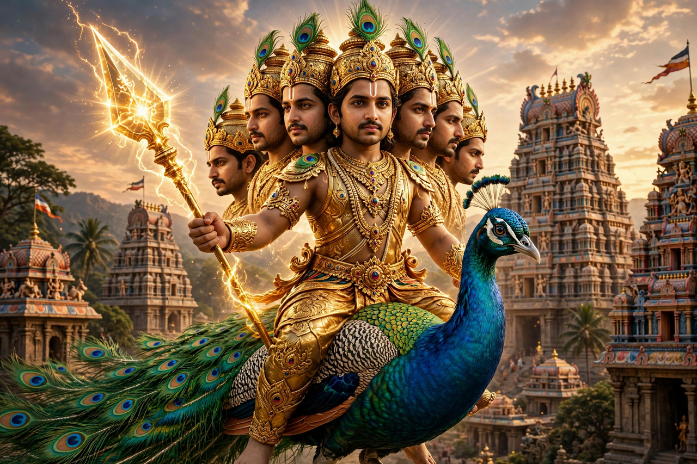

From Wikipedia, the free encyclopedia
| Kartikeya | |
|---|---|
| Affiliation | Hinduism; god of war |
| Parents | Shiva and Parvati |
| Brother | Ganesha |
| Mount | Peacock (Paravani) |
| Weapon | Vel (divine spear) |
| Other names | Murugan (Tamil), Skanda, Kumara, Subrahmanya |
| Consorts | Devasena; Valli (in Tamil tradition) |

Kartikeya, also known as Murugan, Skanda and Kumara, is the Hindu god of war, son of Shiva and Parvati and elder brother (in most northern tellings) of Ganesha. Born to destroy the demon Taraka, who could be killed only by a son of Shiva, he is depicted as an eternally youthful warrior with one or six faces, riding a peacock and wielding the vel, the spear given by his mother. In North India his worship is modest; in the Tamil south, as Murugan — the god of the Tamil land itself, sung by the Sangam poets two thousand years ago — he is one of the most beloved deities of Hinduism, with six great shrines (the Arupadai Vidu) across Tamil Nadu.
The gods, oppressed by Taraka, needed Shiva's son; but Shiva was lost in meditation, and even after his marriage to Parvati the fire of his seed was too great for any womb: carried by Agni and the Ganga, it was deposited in a thicket of reeds, where six Krittikas (the Pleiades) nursed the child — hence his six faces, one for each mother, and his name Kartikeya, son of the Krittikas. Grown in days, he took command of the gods' army, split the mountain Krauncha, and slew Taraka, beginning a career as heaven's generalissimo (Devasenapati — a title that is also his wife Devasena's name).
Tamil tradition makes Murugan its own: the youthful god of the hills (kurinji landscape), lover of the hunter-maid Valli, teacher who explained the meaning of Om to his own father (earning the name Swaminatha, "lord's lord"), and prisoner-turned-preacher of the ancient Tirumurugatruppadai hymns. His festival Thaipusam — when devotees carry kavadi burdens, some pierced through cheeks and tongue, in fulfilment of vows — is celebrated spectacularly in Tamil Nadu, Malaysia (at the Batu Caves, with their great golden Murugan statue), Singapore and wherever the Tamil diaspora has carried him.